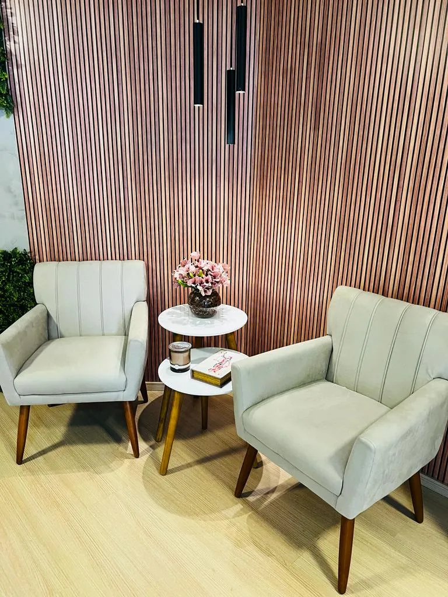

Auxílio-doença, aposentadorias, revisão de benefícios e recursos contra negativas — orientação jurídica próxima, clara e especializada, para quem não pode errar nessa etapa.

Há mais de 14 anos acompanhando pessoas em processos junto ao INSS — do primeiro requerimento à revisão de um benefício já concedido. Atendimento próximo, linguagem clara e explicação de cada etapa, para que você entenda exatamente qual é o seu direito e como conquistá-lo.
Benefício por incapacidade temporária para o trabalho, concedido pelo INSS.
Para casos de incapacidade permanente, com orientação sobre perícia e documentação.
Por idade, por tempo de contribuição e demais modalidades previstas em lei.
Recálculo de benefícios pagos a menor ou concedidos de forma incorreta pelo INSS.
Para idosos e pessoas com deficiência em situação de vulnerabilidade.
Recursos administrativos e ações judiciais contra benefícios indeferidos ou cessados.
Advogada Previdenciarista
67 avaliações reais de clientes atendidos
Ver avaliações no GoogleEnvie uma mensagem pelo WhatsApp e conte, em poucas palavras, qual é a sua situação com o INSS. O retorno é feito diretamente pela advogada.
Conversar pelo WhatsApp ↗